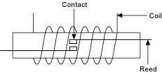
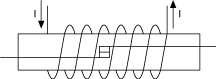

提交有关此主题的反馈。
提交有关此主题的反馈。 访问ni.com/support以获得技术支持。
访问ni.com/support以获得技术支持。簧片继电器是一种机电继电器，由缠绕在簧片开关上的线圈组成。簧片开关有两个重叠的铁磁叶片，密封在充满惰性气体的玻璃胶囊内。当线圈通电时，两个簧片相互物理接触以完成通过继电器的路径。当线圈断电时，簧片中的弹簧力将簧片拉开。下图表示一个开放的簧片继电器。

下图表示一个闭合的簧片继电器。

簧片通常更小，因此可以比电枢继电器中的电枢更快地驱动。然而，簧片也比电枢继电器中的电枢更容易受到电弧的损坏。当火花穿过触点时，它会熔化一小部分簧片。如果在熔化部分重新凝固时触点仍然闭合，则触点可能会焊接在一起。簧片中的弹簧力通常不足以机械地破坏焊缝。
使用带有簧片继电器的开关模块时，请考虑切换容性负载以保护簧片继电器的影响。
提交有关此主题的反馈。 访问ni.com/support以获得技术支持。